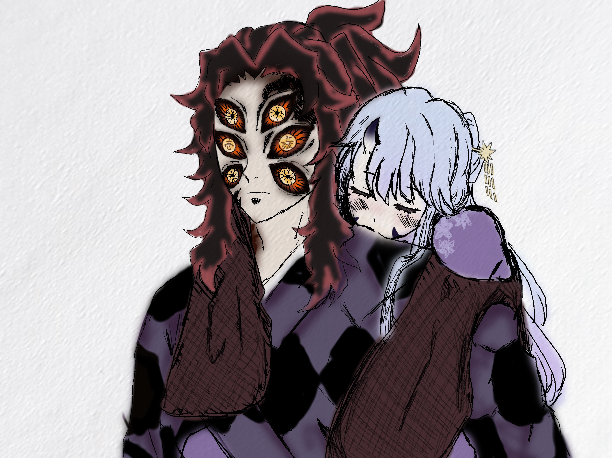
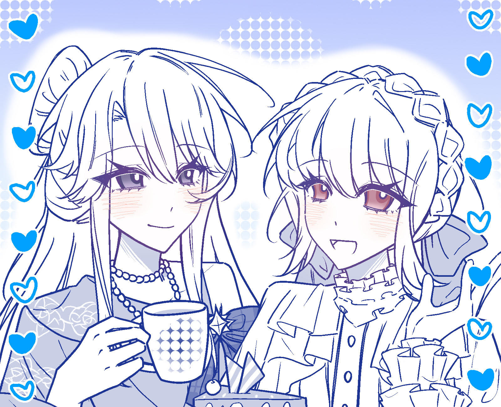

首頁
歡迎來到星星的世界
澪（みお）｜星之呼吸｜黑死牟夢女 Shinomiya Mio · dream ver.
不拒同擔拒同嫁｜主坑鬼滅
͙⁺˚*･༓☾ ☽༓･*˚⁺ ͙
與他是「不驅逐、卻不承認」的暗流關係，距離近到能聽見呼吸就會僵住
偏執創作者——畫澪、寫澪、改設定
顏文字＆Emoji OK
͙⁺˚*･༓☾ ☽༓･*˚⁺ ͙
「如果星星真的會掉下來，那就借我一點吧——我想把它綁在刀上」
✶ 澪
頁面導覽 Navigation
點擊即可前往該頁面：
✶ 特別感謝｜with 蒔秋｜澪
